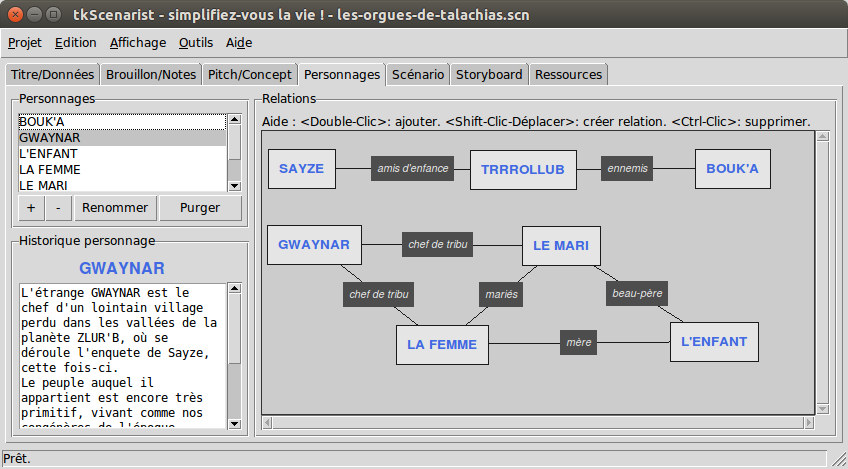

Retourner au sommaire.
Cet onglet permet de gérer les protagonistes du film, notamment les noms des personnages, leur histoire personnelle, ainsi que les liens qui les unissent.
Cet onglet se subdivise en trois zones :
Toutes les zones sont redimensionnables : il suffit de placer la flèche de la souris entre les zones, l'icône du pointeur doit alors changer d'aspect (e.g. deux flèches qui s'opposent), de maintenir le clic enfoncé puis de déplacer dans le sens indiqué par le pointeur de souris pour obtenir le redimensionnement escompté.
Retourner au sommaire.
Pour ajouter un nouveau nom de personnage, cliquez sur le bouton +
(signe plus) situé en bas à gauche de la liste des noms de personnages.
Une fenêtre de dialogue s'ouvre alors pour vous permettre d'entrer un nom.
Ne vous étonnez pas si le nom apparaît systématiquement en majuscules dans la liste, une fois que vous l'avez validé : il s'agit d'une règle de rédaction de scénario qui veut que les noms de personnages soient toujours cités en toutes majuscules dans le texte.
La liste est donc gérée conformément à cette exigence technique, en vue de faire figurer tous les noms de personnages en toutes majuscules lors de leur saisie dans le texte du scénario (voir onglet 'Scénario' pour plus de détail).
Notez aussi que chaque nom de personnage doit être unique (exemple : vous ne pouvez pas créer deux 'JACQUES' sans préciser une différence entre les deux, par exemple avec le nom de famille, 'JACQUES DUMOULIN' et 'JACQUES DUFOUR').
Quoi qu'il en soit, le logiciel ne manquera pas de vous le signaler, le cas échéant.
Retourner au sommaire.
Changer le nom d'un personnage implique plusieurs règles :
Pour renommer un personnage, sélectionnez son nom dans la liste, puis
cliquez sur le bouton Renommer situé en bas de la liste.
Une fenêtre de dialogue s'ouvre alors pour vous permettre de modifier le nom sélectionné.
Si le nouveau nom entré figure déjà dans la liste, le logiciel ne manquera pas de vous le signaler et l'ancien nom du personnage ne sera pas modifié.
Retourner au sommaire.
Vous ne pouvez supprimer le nom d'un personnage que si ce nom existe effectivement dans la liste et qu'il N'EST PAS cité au moins une fois dans le texte du scénario (voir onglet 'Scénario' pour plus de détail).
Pour supprimer un nom de personnage, sélectionnez-le tout d'abord dans
la liste, puis cliquez sur le bouton - (signe moins) situé en bas à
gauche de la liste des noms de personnages.
Une fenêtre de dialogue vous demandera de confirmer votre choix avant de procéder à la suppression définitive du nom du personnage.
Retourner au sommaire.
Il peut arriver parfois que l'on ait besoin de faire place nette dans la liste des noms de personnages.
Purger la liste des noms de personnages revient à supprimer automatiquement tous les noms qui ne sont pas cités au moins une fois dans le texte du scénario.
Pour purger la liste des noms de personnages, cliquez sur le bouton
Purger situé en bas de la liste.
Une fenêtre de dialogue s'ouvre alors et vous demande confirmation de l'opération de nettoyage automatique.
Cliquez sur Oui si vous souhaitez ne conserver que les noms figurant
déjà dans le texte du scénario et supprimer tous les autres.
Retourner au sommaire.
Pour renseigner l'histoire personnelle d'un personnage, il faut tout d'abord sélectionner un nom de personnage dans la liste.
Cliquez sur le nom de personnage que vous souhaitez renseigner puis cliquez sur la zone de texte blanche en bas, à gauche, qui vous permettra de rédiger l'histoire du personnage.
Ne cherchez pas de bouton Sauvegarder, il n'y en a pas : toutes
les saisies dans ces petites zones de texte sont automatiquement
sauvegardées entre chaque personnage.
Il vous suffit donc de sélectionner un nom, d'entrer ensuite son histoire personnelle, puis de cliquer sur un autre nom, d'entrer son histoire personnelle aussi, etc, etc.
En revanche, ce petit confort ne vous dispense pas de sauvegarder régulièrement le projet en entier (voir ci-dessous).
La zone de texte blanche s'appelle un éditeur de texte brut.
L'éditeur de texte brut permet des sauts à la ligne lorsque vous
pressez la touche de clavier <Entrée> (retour chariot).
Chaque saut à la ligne crée un nouveau paragraphe.
En revanche, contrairement au traitement de textes, cet objet ne permet pas la mise en forme du texte entré (diverses polices de caractères, gras, italique, souligné, couleurs d'encre et de fond, centrage / justification de paragraphes, etc).
Il s'agit d'une zone de texte neutre.
Un double-clic sur un mot permet de sélectionner ce mot uniquement.
Un triple-clic sur un mot permet de sélectionner le paragraphe dans lequel ce mot se trouve.
Le menu Edition > Tout sélectionner ou la combinaison de touches de
clavier <Ctrl-A> permettent de tout sélectionner dans l'éditeur
de texte brut.
Tout ruban de sélection est susceptible d'être remplacé par la prochaine frappe d'une touche au clavier.
Contrairement aux champs de formulaire (voir onglet 'Titre/Données'), un éditeur de texte brut prend en charge l'annulation des mots entrés.
Pour annuler la saisie du dernier mot entré, utilisez soit le menu
Edition > Annuler, soit le raccourci clavier <Ctrl-Z> correspondant
au couplage successif des touches Ctrl (en bas à gauche ou à droite
de votre clavier) et Z du clavier alphanumérique.
Pour répéter la saisie du dernier mot annulé, utilisez soit le menu
Edition > Refaire, soit le raccourci clavier <Ctrl-Shift-Z>
correspondant au couplage successif des touches Ctrl, Shift
(chariot majuscules) et Z du clavier alphanumérique.
Retourner au sommaire.
Vous pouvez ajouter un nom de personnage directement dans le gestionnaire visuel de relations, sans passer par la liste des noms de personnages située à gauche.
Pour ce faire, double-cliquez simplement sur une zone neutre du canevas graphique.
Une zone neutre se caractérise par le fond du canevas graphique (fond gris), à l'exclusion de tout autre objet qui pourrait se trouver sous la flèche de la souris, comme par exemple, une étiquette de nom de personnage déjà existant, un lien de relation ou encore une étiquette de relation entre personnages.
Une fenêtre de dialogue s'ouvre alors pour vous permettre d'entrer un nom.
Ne vous étonnez pas si le nom apparaît systématiquement en majuscules dans la liste des noms de personnages ou sur l'étiquette du canevas graphique, une fois que vous l'avez validé : il s'agit d'une règle de rédaction de scénario qui veut que les noms de personnages soient toujours cités en toutes majuscules dans le texte.
La liste des noms est donc gérée conformément à cette exigence technique, en vue de faire figurer tous les noms de personnages en toutes majuscules lors de leur saisie dans le texte du scénario (voir onglet 'Scénario' pour plus de détail).
Notez aussi que chaque nom de personnage doit être unique (exemple : vous ne pouvez pas créer deux 'JACQUES' sans préciser une différence entre les deux, par exemple avec le nom de famille, 'JACQUES DUMOULIN' et 'JACQUES DUFOUR').
Quoi qu'il en soit, le logiciel ne manquera pas de vous le signaler, le cas échéant.
Retourner au sommaire.
Vous pouvez renommer un personnage directement dans le gestionnaire visuel de relations, sans passer par la liste des noms de personnages située à gauche.
Pour ce faire, double-cliquez simplement sur l'étiquette du canevas graphique qui contient le nom que vous souhaitez changer.
Une fenêtre de dialogue s'ouvre alors pour vous permettre de modifier le nom sélectionné.
Changer le nom d'un personnage implique toutefois quelques règles simples :
Si le nouveau nom entré figure déjà dans la liste, le logiciel ne manquera pas de vous le signaler et l'ancien nom du personnage ne sera pas modifié.
Retourner au sommaire.
Vous pouvez supprimer le nom d'un personnage directement dans le gestionnaire visuel de relations, sans passer par la liste des noms de personnages située à gauche.
Pour ce faire, maintenez enfoncée la touche Ctrl (en bas à gauche ou
à droite de votre clavier), puis cliquez sur l'étiquette du canevas
graphique qui contient le nom que vous souhaitez supprimer.
Vous ne pouvez supprimer le nom d'un personnage que si ce nom existe effectivement dans la liste et qu'il N'EST PAS cité au moins une fois dans le texte du scénario (voir onglet 'Scénario' pour plus de détail).
Une fenêtre de dialogue vous demandera alors de confirmer votre choix avant de procéder à la suppression définitive du nom du personnage.
Retourner au sommaire.
Ajouter une relation ne peut se faire qu'en respectant les règles suivantes :
TOTO père de
TUTU ET TUTU fils de TOTO, cela ne marchera pas) ;Pour créer une relation entre deux noms de personnages distincts,
maintenez enfoncée la touche Shift (chariot majuscules, symbole
⇑, en bas à gauche ou à droite du clavier), enfoncez le bouton
clic de la souris sur l'étiquette du nom de départ, puis glissez la
souris jusqu'à atteindre l'étiquette du nom de personnage d'arrivée et
enfin relâchez le bouton clic de la souris une fois sur place, ainsi
que la touche Shift du clavier.
Un lien visuel devrait apparaître sous la forme d'un trait noir sortant de l'étiquette de départ et aboutissant à l'étiquette d'arrivée, flanqué d'une étiquette noire mentionnant 'Relation' à mi-chemin.
Retourner au sommaire.
Pour changer le contenu texte d'une relation, double-cliquez simplement sur l'étiquette noire contenant le texte à modifier.
Une fenêtre de dialogue s'ouvre alors pour vous permettre de modifier le contenu texte de la relation.
Retourner au sommaire.
Pour supprimer une relation entre deux noms de personnages, maintenez
enfoncée la touche Ctrl (en bas à gauche ou à droite de votre
clavier), puis cliquez sur l'étiquette noire du canevas graphique qui
contient le texte de la relation que vous souhaitez supprimer.
Une fenêtre de dialogue vous demandera alors de confirmer votre choix avant de procéder à la suppression définitive de la relation.
Retourner au sommaire.
Si vous cliquez simplement sur l'étiquette de nom d'un personnage dans le canevas graphique du gestionnaire visuel de relations, vous sélectionnez par la même occasion le nom du personnage dans la liste des noms de personnages située en haut à gauche et vous obtenez aussi dans la foulée des informations dans l'historique personnage situé en bas à gauche.
Vous pouvez déplacer les étiquettes de noms de personnages qui se trouvent dans le canevas graphique du gestionnaire de relations en maintenant simplement le bouton clic de la souris enfoncé sur l'étiquette de nom que vous souhaitez déplacer, en bougeant la souris dans la direction souhaitée, puis en relâchant le bouton clic de la souris une fois sur place (glisser-déposer, drag'n'drop).
Il existe aussi une fonctionnalité de navigation secrète.
Pour naviguer rapidement dans le canevas graphique, maintenez le bouton clic de la souris enfoncé sur une zone neutre, puis déplacez la souris dans la direction où vous souhaitez aller.
Relâchez enfin le bouton clic de la souris une fois arrivé(e) à destination.
Une zone neutre se caractérise par le fond du canevas graphique (fond gris), à l'exclusion de tout autre objet qui pourrait se trouver sous la flèche de la souris, comme par exemple, une étiquette de nom de personnage déjà existant, un lien de relation ou encore une étiquette de relation entre personnages.
IMPORTANT : afin de vous préserver de toute mauvaise surprise,
pensez à sauvegarder régulièrement votre projet, soit en utilisant
le menu Projet > Enregistrer, soit en utilisant le raccourci clavier
<Ctrl-S> correspondant au couplage successif des touches Ctrl (en
bas à gauche ou à droite de votre clavier) et S du clavier
alphanumérique.
Retourner au sommaire.
Retourner à l'accueil.